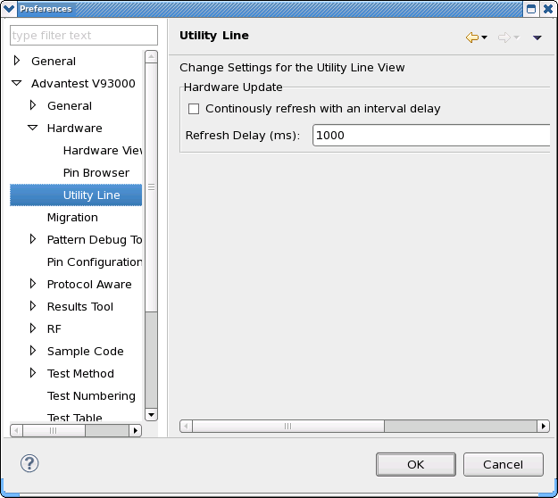

Utility Line preference page
You can change the following preferences on the preference page.
Option |
Description |
|---|---|
Continuously refresh with an interval delay |
Use this option to refresh the hardware information in the Utility Line view continuously with a specified interval delay. |
Refresh Delay |
Specify the interval delay with which the hardware information in the Utility Line view is refreshed. |
The following displays the Utility Line preference page.

Functional changes
- Introduced in SmarTest 6.5.2